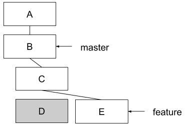
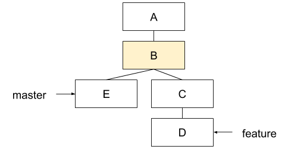
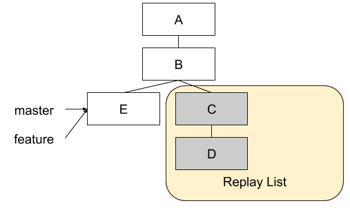
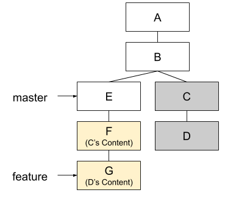

Git Internals
Aaron Kuehler
This talk is
a high level tour of git's internals
This talk isn't
a git tutorial
What is Git?
You might have heard…
Git (ɡɪt) is a distributed revision control system with an emphasis on speed, data integrity, and support for distributed, non-linear workflows and BLAH BLAH BLAH BLAH BLAH BLAH…
– Wikipedia
Kinda, but really…
Git is an inter-dimensional, time traveling spaceship
How the spaceship is built
Object Database
- Contained within the .git directory
- A key-value store (Hashes => Contents)
Hashing
- INPUT: Any amount of data
- OUTPUT: Fixed-size digest
=> echo "short thing to hash" | openssl dgst -sha1 199e4f3bcf4b1ea640949b11f44d1a48f4bacf6c => echo "loooooooong thing to hash" | openssl dgst -sha1 a75402ee333f2f6d5937ff2be031b5945caa9c1b
Identity
- Git generates a hash for any piece of information it's told to save
- Objects are identified ONLY by the hash of their contents
- Hashes are unambiguous identifiers
- By contrast, file system names and paths only tell you where; not what
Integrity
- Hashing makes it easy to detect bit-level storage errors
- Hashing makes it difficult to falsify objects
Objects
- Generic term for a HASH => Contents relationship
- 3 general types of objects…
Blob Objects
- Contents of a files
=> ls total 16 drwxr-xr-x 7 aaronk staff 238B Jun 16 09:11 . drwxr-xr-x 9 aaronk staff 306B Jun 15 15:46 .. drwxr-xr-x 16 aaronk staff 544B Jun 16 09:11 .git -rw-r--r-- 1 aaronk staff 86B Jun 15 16:10 .gitmodules -rw-r--r-- 1 aaronk staff 54B Jun 16 09:10 README drwxr-xr-x 6 aaronk staff 204B Jun 16 09:07 git_internals drwxr-xr-x 16 aaronk staff 544B Jun 15 16:10 reveal.js
=> git hash-object README 59e1f9a827c70a7ab74c4ead6ed3d71be53ebb15
Tree Objects
- Akin to UNIX directory entries
- Group blobs and other tree objects
- Describes the file system mode, type, hash, and name of contents
- Hashed by its metadata and its content's hashes
04000es0 tree 37575c28afe11142022728378a61290db6944b55 git_internals
=> git ls-tree 37575c28afe11142022728378a61290db6944b55 100644 blob b604cebcf51df85a482bb3fa512f4b35b779904e git_internals.html 100644 blob c26e176b07a6ca31ce24944f77724971b1f70036 git_internals.org 040000 tree 01130c2e51b2cff13d89fa3710d2746168c762f9 images
Commit Objects
- Identified by Hash of the root tree object
- Records entire state of the repository at a point in time
- Commit Meta-data
- Author, subject and log message, when it was made
=> git log --oneline -n 1 ef971ae add README
=> git ls-tree ef971ae 100644 blob b2a68171122dcbfdccdb9a9e824a567c6ef9fed2 .gitmodules 100644 blob 59e1f9a827c70a7ab74c4ead6ed3d71be53ebb15 README 040000 tree 37575c28afe11142022728378a61290db6944b55 git_internals 160000 commit f0cf1f54d04088d241acf81eef42bd878a9f02ba reveal.js
How the spaceship moves
"Legacy" Version Control Systems

- A list of changes to a collection of files
Git

- A stream of snapshots of the repository's file system
- If a file hasn't changed, a reference to the previous version is stored
Managing Changes
- 3 states of changes
- Modified
- Staged for commit
- Committed
Working Directory
- Project root directory
- Contents are at a single version state of the project
- Files are pulled out of the git object database and put onto disk to be modified
- Changes are introduced here
Index
- Commit staging area
- A file in the .git directory
- Groups changes across repository contents as a logical change set
- Add changes to the index with
=> git add
Repository
- Is the .git directory at the project root
- Persistent, compressed object database
- Changes become permanent residents of the repository through Commits
=> git commit
History
- A commit object knows the hash of the commit that came before it
- It is easy to detect when history has been rewritten
- Some parent commit's hash will fail hash validation
Branches
- Two or more commits share the same parent
- Use to segregate and track unrelated change sets
- Branches are CHEAP! (it's just a parent commit ref)

HEAD
- Mapping of a Name => Commit
- Adding a commit on a branch reassigns the HEAD ref to the new commit

Spoiler Alert
- All HEADs are created equal
- Nothing special about the master or develop HEAD refs
- It's just a naming convention
Changing the course of history
- Commit E is a mistake and we want to remove it

Changing the course of history
- Change the feature/xyz HEAD ref Commit D
=> git reset HEAD~1

Changing the course of history
- Make a new commit
=> git add -all => git commit

Changing the course of history
- Unreachable commits are removed from the repository
=> git gc
Changing history itself
- Rewrite a point in history to create a new version of reality
- Called Rebasing
Rebasing
- What if we forgot to add something as part of commit B

Rebasing
- Go back in time and make the commit you wish you had instead of commit B – commit E

Rebasing
- OK, now what?
- Can't just move the feature/xyz HEAD
- We'd lose commits C and D

Rebasing
- "Replaying commits"
- Git can calculate diffs between parent and child commits
- Rebasing does this for all commits after B
- Then applies the diffs as new commits on top of E

With great power…
- Changing shared history can be bad
- Leaves fellow time travelers stuck in unreferenced, parallel dimensions
- Never on rebase shared timelines (develop, master, release)
- Usually safe with private timelines (feature, hotfix)
- But, it can be really useful for keeping history "clean"
Summary
- Nomenclature: Repository, Hash, Object, Head, Index, etc
- How git tracks time and space internally
Sources / Resources
- Slides (http://bit.ly/talks_git_internals)
- Pro Git (http://git-scm.com/book/en/v2)
- Git From the Bottom Up (http://ftp.newartisans.com/pub/git.from.bottom.up.pdf)
- Wikipedia (https://en.wikipedia.org/?title=Git_(software))